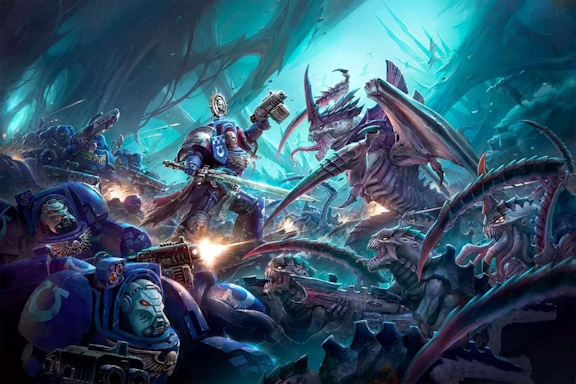
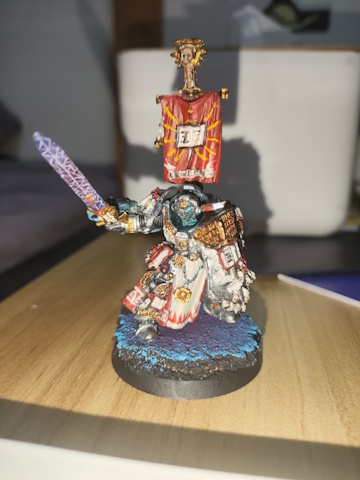
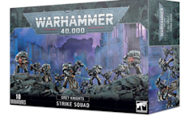

Warhammer is a fictional universe where Earth is set in the 41st millennium, where Earth, now known as Holy Terra, is beseiged on all sides by alien species, and even those who worship a malevolent force of nature known as Chaos
Artwork by Raymond Swanland
A lot. In this hobby, you can collect and paint miniatures of the things inside this universe, build and paint them, and even play games with the minuatures that you painted. And thats not all, for there are even novels that further expands the lore in this vast universe.
Kaldor Draigo Miniature painted by me :D
I originally started it because my friends convinced me to buy a box set of Grey knight Strike Squads. As soon as I heard the concept of warhammer 40k I fell in love with it almost immedietly. The mini painting aspect is also quite fun. It is very beginner friendly, and the novel range is also stellar, the books are unironically well written.
Box of strike squad found in the warhammer website

My Part time jobs that i have worked is a waiter at Pastamania, and a cashier at a local game store.